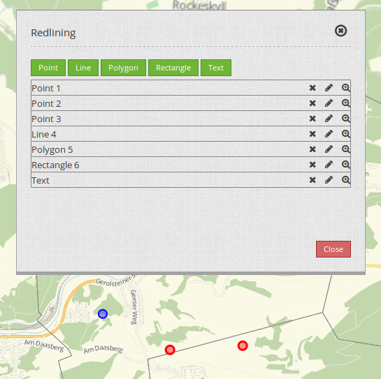
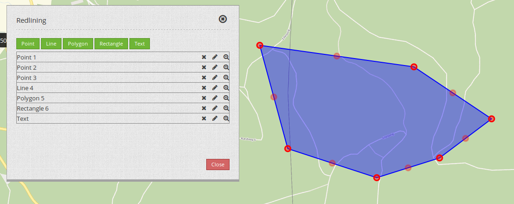

Redlining¶
With the element Redlining you can create temporarily available geometries in your map. Temporarily available means that the objects are not stored in a database and are lost after reloading the application.
The drawn geometries can be printed out. Objects on the map can be edited further.
The available geometry-types are:
- Points
- Lines
- Polygons
- Rectangles
- Text (Annotations)
{kind=link}
Configuration¶

- Title: Title of the elements. This is referenced by the button which opens the element.
- Target: ID of the map-element, to which the Redlining refers.
- Geometrytypes: The geometry-types that should be supported by the Redlining. You can select the individual with your mouse: Point, Line, Polygon, Rectangle, Text.
As a dialog¶
Set the Display type to “Dialog”. You will need a button to open the Redlining in a dialog. Choose the Sketch Icon as the icon on the toolbar and set the target to the name of the Element.
Into the sidepane¶
You can place the Redlining into the sidebar. Set the Display type to “Element”.
Usage¶
Draw objects¶
Point: Select the button “Point” and set a point in the map.
Line: Select the button “Line” and draw the individual line-segments in the map. You can finish the draw with a double-click.
Polygon: Select the button “Polygon” and draw the individual vertices in the map. You can finish the draw with a double-click.
Rectangle: Select the button “Rectangle” and simply open up a rectangle with your mouse.
Text: Select the button “Text”. The dialog will show a textfield where you can set your text. After this, simply click into the map. Your specified text will appear at the click-point.
Once you have clicked the button of one geometry-type, this button is active and you can drob objects on the map. If you want to quit the draw-mode, click again on that button.
Delete objects¶
With the X-Symbol you can delete the respective object from the map.
Change objects¶
With the pen-symbol you can move or alter the respective object. The chosen object will be highlighted. You can finish this operation with a click into the map.
Points and Annotations can be moved to a different position. Lines and Polygon can not be moved.
{kind=link}
You can add new vertices to existing lines or polygons if you move the vertex in the middle of an edge (the lightly transparent rendered vertex). You can remove vertices by clicking on a vertex and hitting the Delete-key.
{kind=link}
You can move text. The anchor-point of a text is at the bottom left corner of the first character. To move the text, simply click on that region and move the text in the map. The text cannot be altered after it is set. Please remove the old text object and set a new one.

Zoom to an object¶
You can zoom to the specific object by clicking on the magnifying glass symbol.
Quit the draw-mode¶
If you have finished your drawing, click again on the button of your geometry-type. The button gets inactiv again and a click on the map leads again to the standard behaviour.
YAML-definition¶
"auto_activate": false, # true/false
"deactivate_on_close": true, # true/false
"display_type": "element", # element/dialog
"geometrytypes": [
"point",
"line",
"polygon",
"text",
"rectangle"
],
"target": ~
Class, Widget & Style¶
- Class: Mapbender/CoreBundle/Element/Redlining
- Widget: Mapbender/CoreBundle/Resources/public/mapbender.element.redlining.js
- Scss: Mapbender/CoreBundle/Resources/public/sass/element/redlining.scss
- Twig: Mapbender/CoreBundle/Resources/views/Element/redlining.html.twig
- Json: Mapbender/CoreBundle/Resources/views/Element/redlining.json.twig
- AdminType: /Mapbender/CoreBundle/Element/Type/RedliningAdminType.php
- Admin: Mapbender/CoreBundle/Resources/views/ElementAdmin/redlining.html.twig